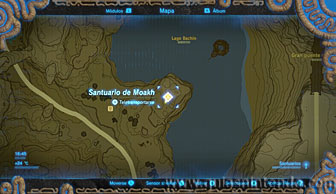
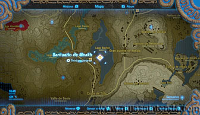
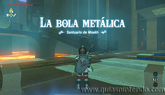
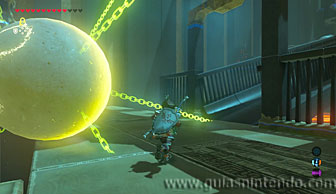
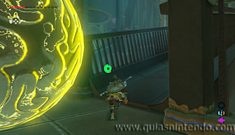
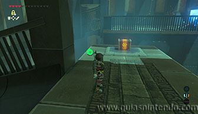
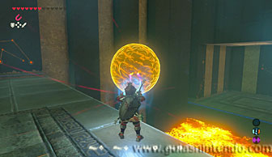
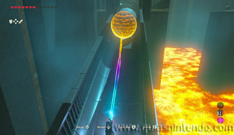
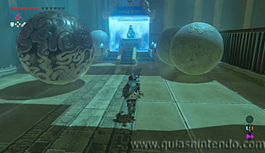

Puedes entrar en este santuario desde que llegas a la región de la torre de Eldin. Lo encuentras muy cerca de la Posta de la montaña, al sur de la Montaña de la Muerte.

Para superarlo deberás usar tanto el paralizador como el imán. El primer módulo te servirá para parar la roca que cae y poder subir la primera rampa sin peligro.

Al subir, ve a la rampa de más a la derecha y vuelve a repetir lo mismo (aunque en esta ocasión es una esfera metálica la que cae rodando) para poder llegar al cofre que hay arriba (contiene una Espada real).

Ahora usa el módulo imán para coger esa esfera metálica y úsala como escudo en la rampa de más a la izquierda, por donde caen muchas rocas seguidas. Así podrás subir por la rampa y llegar al altar.

Cuando llegues a él suelta la esfera y examínalo para obtener un símbolo de valía.
